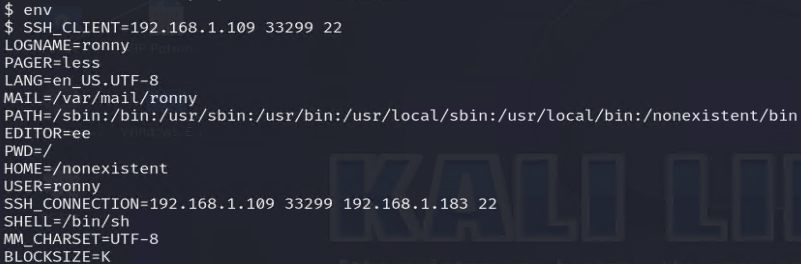
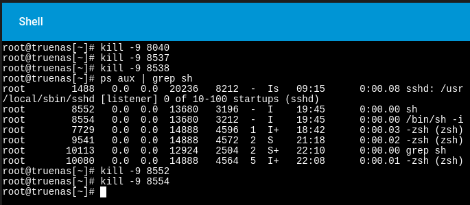
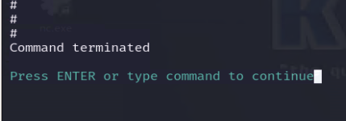

Following the successful brute-force attack via SSH in Lab 2, the offensive side gained access to the target NAS server and upgraded from a BSD shell to a Meterpreter session.
However, the account in use lacks root privileges, so privilege escalation is required to proceed further.
For demonstration purposes in this lab, I have set the SUID bit on the vim binary to demonstrate a privilege escalation attack using that method.
Before proceeding further, here are a few notes:
SUID bit
The SUID (Set User ID) bit is a special permission in Unix/Linux file systems that allow a program to run with the privileges of the file’s owner, rather than the privileges of the user who executes it. Is it represented by the s character in the file’s permission field listed using ls –l.
When the SUID bit is set on an executable file:
Example:
For a file owned by the root user with SUID set:
The s in -rwsr-xr-x indicates the SUID bit is set.
If example_program is executed by a non-root user, it runs with root privileges.
Going further with the privilege escalation we have the Meterpreter session here where I’m going to spawn a shell with /bin/sh -i.
In this particular scenario I found that using vim on a spawned shell through Meterpreter didn’t work with vim commands such as :q
I then figured out there was a particular environment variable called TERM that was not present.
I then learned to set the variable to xterm using the export TERM=xterm command.
Allowing the exploitation of the SUID being set to occur in vim
Running :!sh will spawn a root shell, executing the /bin/sh (or the default shell) with root privileges because the SUID bit allows vim to run as its owner (root).
In the log below, we see that the ronny user attempted to execute commands involving vim with elevated privileges (e.g., sudo.
The execution of /usr/local/bin/vim with the -c /bin/sh argument spawns a shell.
Here we can see the processes spawned by the user account ronny. The /bin/sh and the -sh indicate interactive and script-based shells. Processes like sh –i suggest that an interactive shell was spawned, likely through vim exploit.
The processes owned by root (e.g., PID 8554 and PID 9860) indicate privilege escalation was achieved from the ronny user.
Immediately kill the processes related to the ronny user account as well as other root process that indicate malicious activity.
Back on the offensive side, access to the NAS server is lost.
From here, a cybersecurity analyst would review the activity for the ronny user account. To trace back the sequence of actions that led to privilege escalation.
In this lab demonstration, I successfully performed privilege escalation on a TrueNAS-based system by leveraging a misconfigured SUID binary vim and manipulating the TERM environment variable. This attack highlights a critical lesson in identifying and exploiting common privilege escalation vectors in Unix-based systems.
While deliberately misconfiguring the vim binary to have the SUID bit set is unlikely in a production system, this scenario is designed to emulate situations where:
TERM, are not properly sanitized, providing opportunities for exploitation.In real-world penetration testing, identifying and exploiting misconfigured SUID binaries or unsensitized environment variables is a key skill. Although this specific attack setup is tailored for a lab environment, the methodology aligns closely with techniques to uncover and exploit similar vulnerabilities in production systems.